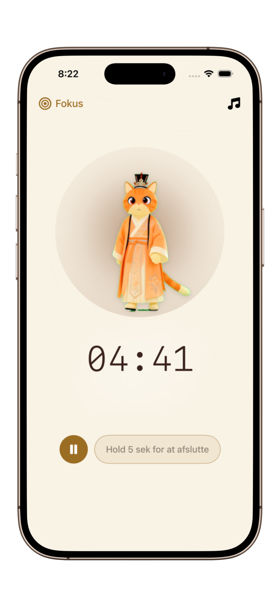
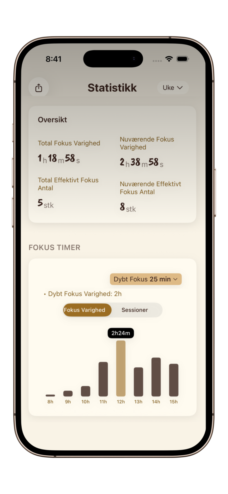

Sådan opbygger du en fokus-vane (der faktisk holder)
Glem alt om viljestyrke. Lær hvordan du hacker dine omgivelser og din biologi for at gøre koncentration til din standardtilstand.
De fleste mennesker fejler i at opbygge en fokus-vane, fordi de behandler fokus som en spurt. I virkeligheden er fokus en muskel. Hvis du prøver at løfte 50 kg på første dag, kommer du til skade. Hemmeligheden bag langsigtet produktivitet er at starte absurd småt.
Psykologien bag "Vane-loopet"
Enhver vane består af et Signal, en Trængsel, en Respons og en Belønning. For at opbygge en fokus-vane skal du gøre Signalet tydeligt og Belønningen tilfredsstillende.
Skab et visuelt anker
At åbne en specifik app som PurrrrrFocus fungerer som en visuel "trigger". Når din hjerne ser den rolige blæk-æstetik og din katte-makker, begynder den at associere dette miljø med dybt arbejde.
5-minutters indgangen
Brug metoden med Små Vaner. Forpligt dig ikke til en time. Forpligt dig til 5 minutters fokuseret arbejde. PurrrrrFocus giver dig mulighed for at indstille mikro-sessioner, der sænker barrieren for at komme i gang.
Spor og beløn kontinuitet
Fokuser ikke på perfektion. Brug PurrrrrFocus til at spore dine daglige "streaks". Hver fuldført session er en lille sejr, der omkoder din hjerne til at hige efter fokus.


Hvorfor viljestyrke er din fjende
Viljestyrke er en begrænset ressource. Hvis du stoler på den for at holde fokus, vil du til sidst brænde ud. Brug i stedet miljødesign. Ved at bruge en minimalistisk timer fjerner du behovet for at "beslutte" at være produktiv – systemet gør det for dig.
Start din 21-dages fokusrejse
At opbygge en vane tager tid, men det er nemt at starte. Download PurrrrrFocus og lad vores katte-makker guide dig til din første session.
Start min første sessionBeløn din indsats
Din hjerne har brug for et dopamin-fix for at forstærke en vane. I PurrrrrFocus giver tilfredsheden ved at fuldføre en session og se din statistik vokse det øjeblikkelige positive feedback-loop, der er nødvendigt for vanedannelse.